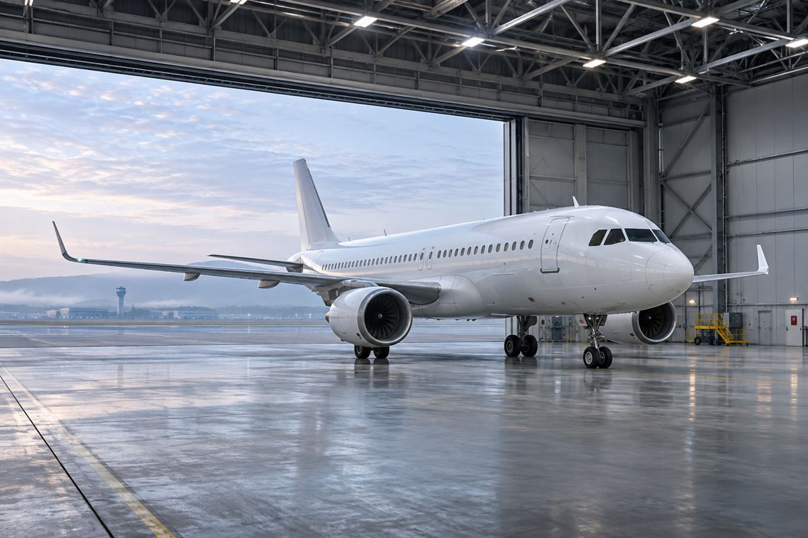

飞机生产 / EXPLAINED
空客10月交付74架：为何不能与202架订单直接比较
截至10月底累计交付621架。签订合同、交付飞机与投入航线运营是三个不同阶段。

空客公布的2026年10月数据为：向45家客户交付74架民用飞机，获得202架总订单；1至10月累计向91家客户交付621架。月度数据于11月6日公开，统计截至10月底。这并不意味着202架飞机当月离开工厂，也不意味着累计交付的621架已经全部载客运营。
空客是一家为航空公司设计和制造飞机的企业，产品包括单通道A220、A320系列以及较大型的A330、A350。购买方还包括将飞机租给运营商的租赁公司。因此，交付客户数量并不等于新增运营航空公司的数量，同一客户也可能接收多架或不同型号的飞机。
合同与交付之间
总订单记录新签合同数量，净订单则要考虑取消等调整。此次202架明确属于总订单。交付是将完成制造的飞机移交客户，之前还需要装配、测试、客舱安装和验收。两项月度数字无需相等，把它们视为同一指标会混淆市场需求和实际可用供给。
621架和74架的统计周期也不同。相减可得10月之前累计交付547架，但这项计算不能预测剩余月份的速度。不同机型的完工安排、客户接收时间都可能改变月度结果。年度目标又是另一种前瞻性指标，月报本身没有保证年底前会交付多少架。统计范围是民用飞机，应与直升机及军用飞机交付区分。
对乘客而言，还要看自己所乘航空公司是否收到具体飞机，以及何时安排到哪条航线。全球制造数据不是座位布局或首次商业飞行的时间表。交付以后仍可能需要运营准备和机组培训，订票页面显示的机型也可能因运行安排而变化。
本刊的分析是，应分别观察合同获取和可立即投入使用的机队增长。这不构成对某家航空公司增班或票价下降的预测。新飞机既可用于开拓航线，也可替换旧机，只有运营商的计划才能说明用途，因此新机增加不一定带来同比例的座位增加。
空客月度页面还提供按客户与机型细分的下载资料。关注某个航班的读者，应同时查阅航空公司自己的投入运营公告。本文没有确认任何单一航空公司的新航线或下一次交付日期，把74架全球总量与具体旅程联系起来仍需额外官方信息。